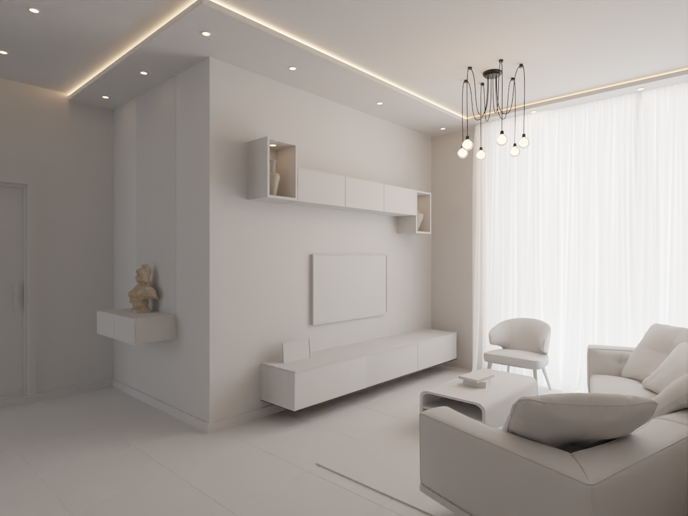
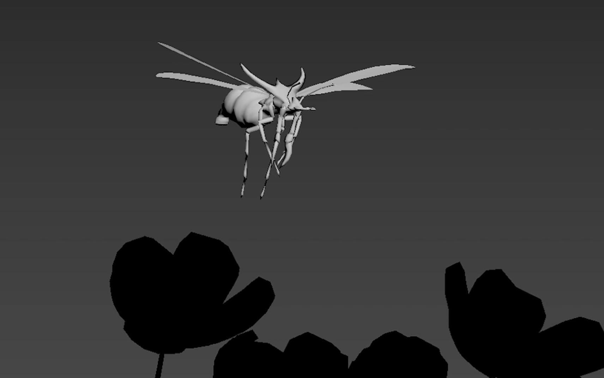
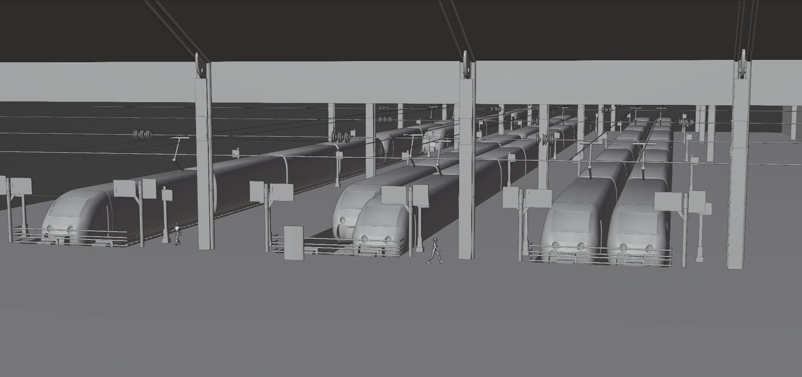
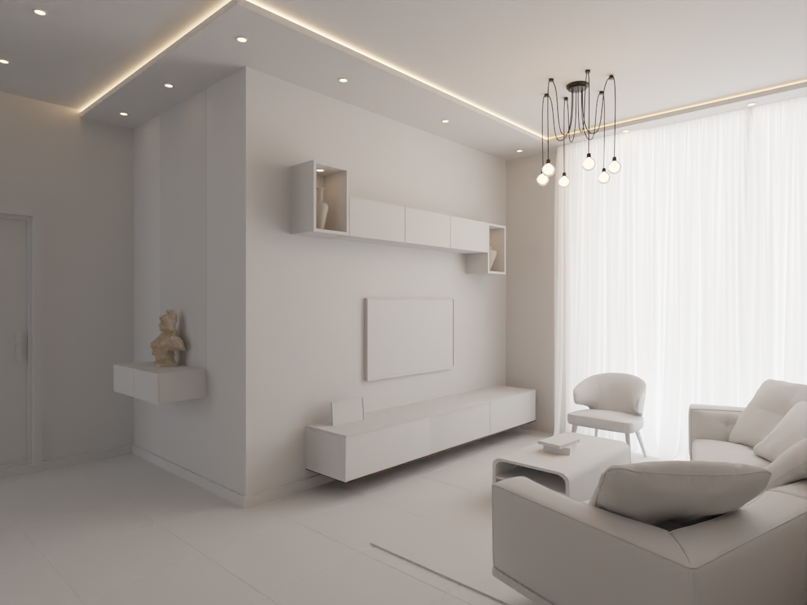
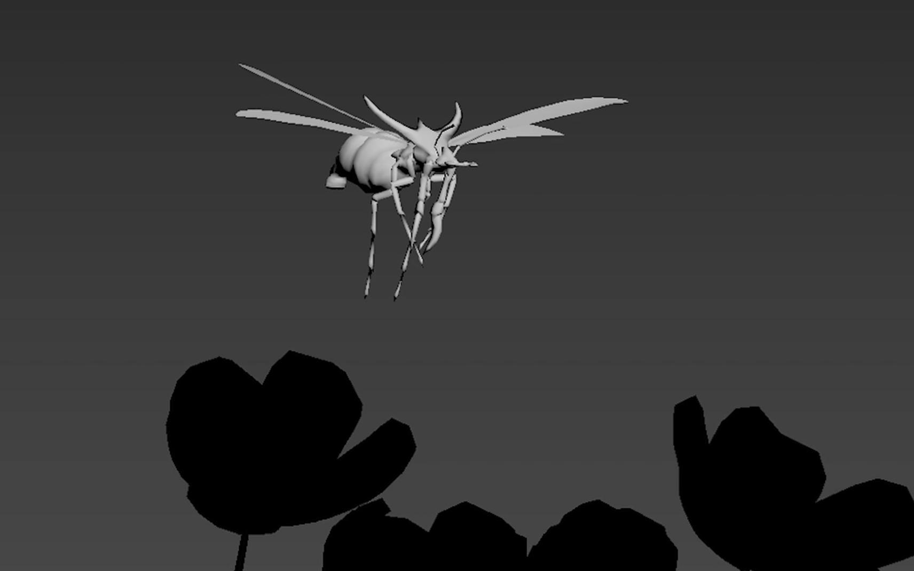
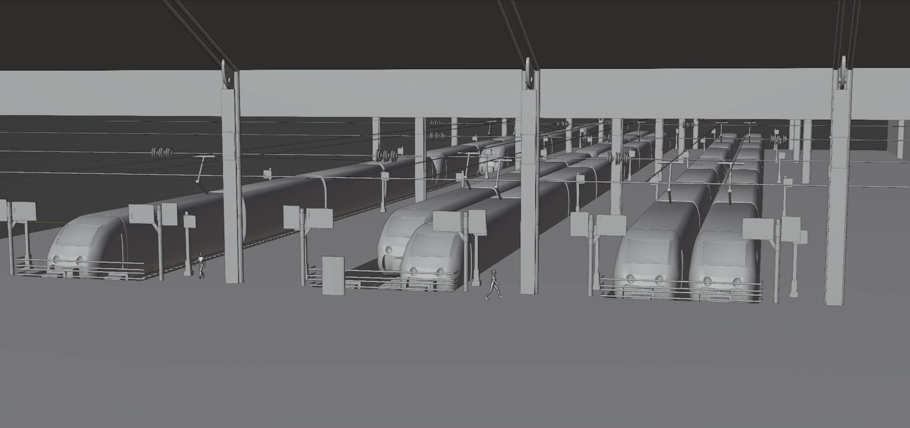

.
 "Penhaligon's"
"Penhaligon's"
student project for a london luxury brand
made on blender, using zbrush, subtance painter, nuke and after effects
modeling deer, lighting and compositing "Modern House"
Made on Blender
Work in progress, Personal project. "LOUIS VUITTON" commercial visualization.
"LOUIS VUITTON" commercial visualization.
 "Cho sang woo, Squid Game."
"Cho sang woo, Squid Game."
Made on Zbrush
We had one week to make a sculpt using zbrush and we could choose the character we wanted to. ."Animation of an insect"
Made on 3DS Max "Advertising : Drink with moderation"
"Advertising : Drink with moderation"
Made on Blender
Work in progress, Personal project. "Grenier - Aménagé"
"Grenier - Aménagé"
Project for SNCF.
on Substance Painter for texturing and
on Unreal Engine for integration.  "Train station"
Work in progress
Project for SNCF. "Santorin"
"Santorin"
Final on Unreal Engine,
Modeling on Maya and Blender, Texturing on Adobe Substance Painter. "Earth."
"Earth."
all aspects.
Made on Blender,
starting with a low res mesh and using NASA map of the earth to make textures.
"Penhaligon's" student project for a london luxury brand
made on blender, using zbrush, subtance painter, nuke and after effects
modeling deer, lighting and compositing "Modern House"
Made on Blender
Work in progress, Personal project.
"LOUIS VUITTON" commercial visualization.
"Cho sang woo, Squid Game." Made on Zbrush
We had one week to make a sculpt using zbrush and we could choose the character we wanted to. ."Animation of an insect"
Made on 3DS Max
"Advertising : Drink with moderation" Made on Blender
Work in progress, Personal project.
"Grenier - Aménagé" Project for SNCF.
on Substance Painter for texturing and
on Unreal Engine for integration.  "Train station"
Work in progress
Project for SNCF.
"Santorin" Final on Unreal Engine,
Modeling on Maya and Blender, Texturing on Adobe Substance Painter.
"Earth." all aspects.
Made on Blender,
starting with a low res mesh and using NASA map of the earth to make textures.